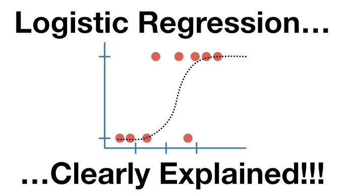

Logistic Regression with Python

Estimated reading time: ~30 minutes
Logistic Regression with Python
Objectives
- Use Logistic Regression for classification
- Preprocess data for modeling
- Implement Logistic regression on real world data
Classification with Logistic Regression
Assume you are working for a telecommunications company concerned about customer churn. The goal is to predict which customers are likely to leave.
Load the Telco Churn data
Telco Churn is a hypothetical dataset for predicting customer churn. Each row represents a customer with various demographic and service usage information.
Data Preprocessing
For this lab, we use a subset of fields: ‘tenure’, ‘age’, ‘address’, ‘income’, ‘ed’, ‘employ’, ‘equip’, and ‘churn’.
import pandas as pd
import numpy as np
from sklearn.model_selection import train_test_split
from sklearn.linear_model import LogisticRegression
from sklearn.preprocessing import StandardScaler
from sklearn.metrics import log_loss
import matplotlib.pyplot as plt
%matplotlib inline
import warnings
warnings.filterwarnings('ignore')
url = "https://cf-courses-data.s3.us.cloud-object-storage.appdomain.cloud/IBMDeveloperSkillsNetwork-ML0101EN-SkillsNetwork/labs/Module%203/data/ChurnData.csv"
churn_df = pd.read_csv(url)
churn_df = churn_df[['tenure', 'age', 'address', 'income', 'ed', 'employ', 'equip', 'churn']]
churn_df['churn'] = churn_df['churn'].astype('int')Feature Selection
X = np.asarray(churn_df[['tenure', 'age', 'address', 'income', 'ed', 'employ', 'equip']])
y = np.asarray(churn_df['churn'])Standardization
X_norm = StandardScaler().fit(X).transform(X)Splitting the dataset
X_train, X_test, y_train, y_test = train_test_split(X_norm, y, test_size=0.2, random_state=4)Logistic Regression Classifier modeling
Model (binary outcome)
\[P(y=1\mid x)=\sigma(\eta)=\frac{1}{1+e^{-\eta}},\quad \eta=x^\top \beta.\]
Equivalently, the log-odds are linear:
\[\log\frac{P(y=1\mid x)}{1-P(y=1\mid x)}=x^\top \beta.\]
Random-utility (discrete-choice) view
Latent index model:
\[y^\ast=x^\top\beta+\varepsilon,\quad y=\mathbf{1}\{y^\ast\ge 0\}.\]
If \[\varepsilon\sim\text{Logistic}(0,1)\] (difference of i.i.d. Gumbel/Type‑I EV errors), then
\[P(y=1\mid x)=\sigma(x^\top\beta).\]
This is the same logit link used in discrete-choice models.
Likelihood, log-likelihood, cross-entropy
With observations \[\{(y_i,x_i)\}_{i=1}^n\] and \[p_i=\sigma(x_i^\top\beta)\], the Bernoulli likelihood is
\[L(\beta)=\prod_{i=1}^n p_i^{y_i}(1-p_i)^{1-y_i},\qquad \ell(\beta)=\sum_{i=1}^n\left[y_i\log p_i+(1-y_i)\log(1-p_i)\right].\]
The empirical cross-entropy (what sklearn’s
log_lossreports) is\[\text{CE}(\beta)=-\frac{1}{n}\,\ell(\beta).\]
Score, Hessian, convexity
Stack rows in \[X\in\mathbb{R}^{n\times p}\], let \[p=(p_1,\dots,p_n)^\top\] and \[W=\mathrm{diag}(p_i(1-p_i))\]. Then
\[\nabla\ell(\beta)=X^\top(y-p),\qquad \nabla^2\ell(\beta)=-X^\top W X.\]
Since \[-\,\nabla^2\ell(\beta)\succeq 0\], \[\ell(\beta)\] is concave, so the negative log-likelihood (cross-entropy) is convex and has a unique minimizer when it exists.
IRLS / Newton updates
One Newton step yields
\[\beta_{\text{new}}=\beta_{\text{old}}+(X^\top W X)^{-1}X^\top(y-p),\]
which is the iteratively reweighted least squares (IRLS) algorithm. A WLS form uses the pseudo-response
\[z=\eta+\frac{y-p}{p(1-p)},\quad \text{solve } (X^\top W X)\beta=X^\top W z.\]
Standard errors and tests (MLE)
At the MLE \[\hat\beta\], the asymptotic covariance is
\[\mathrm{Var}(\hat\beta)\approx (X^\top W X)^{-1}.\]
Wald: \[\hat\beta_j/\mathrm{SE}(\hat\beta_j)\]; LR test: \[2(\ell_{\text{full}}-\ell_{\text{restr}})\sim\chi^2\].
Marginal effects and odds ratios
\[\frac{\partial}{\partial x_j}P(y=1\mid x)=p(1-p)\,\beta_j,\qquad \text{odds ratio}=\exp(\beta_j).\]
Regularization (as in sklearn by default)
L2-penalized log-likelihood:
\[\ell_\lambda(\beta)=\ell(\beta)-\frac{\lambda}{2}\lVert\beta\rVert_2^2,\]
so
\[\nabla\ell_\lambda(\beta)=X^\top(y-p)-\lambda\beta,\quad \nabla^2\ell_\lambda(\beta)=-X^\top W X-\lambda I.\]
L1 replaces \[\lVert\beta\rVert_2^2\] with \[\lVert\beta\rVert_1\] (subgradients, promotes sparsity).
Existence issues
With (quasi) separation, the unpenalized MLE may not exist (coefficients diverge). L2 or bias-reduction fixes help.
LR = LogisticRegression().fit(X_train, y_train)
yhat = LR.predict(X_test)
yhat_prob = LR.predict_proba(X_test)Feature Importance
coefficients = pd.Series(LR.coef_[0], index=churn_df.columns[:-1])
coefficients.sort_values().plot(kind='barh')
plt.title("Feature Coefficients in Logistic Regression Churn Model")
plt.xlabel("Coefficient Value")
plt.show()Performance Evaluation
log_loss(y_test, yhat_prob)The log loss is a measure of how well the model’s predicted probabilities match the actual outcomes. A lower log loss indicates better performance.
Feature Selection
Let’s experiment on adding and removing some features and assess how the performance of the model change.
# Helper to recompute pipeline and log loss for a given feature list
def compute_log_loss_for(features):
# Prefer full dataset if available to access optional columns
df = globals().get('churn_full_df', churn_df)
# Build feature matrix and target
X_local = np.asarray(df[features])
y_local = np.asarray(df['churn'].astype(int))
# Scale then split with fixed seed to match above
X_local_norm = StandardScaler().fit_transform(X_local)
X_tr, X_te, y_tr, y_te = train_test_split(X_local_norm, y_local, test_size=0.2, random_state=4)
# Train and evaluate
model = LogisticRegression()
model.fit(X_tr, y_tr)
y_proba = model.predict_proba(X_te)
return log_loss(y_te, y_proba)
# Sanity check: baseline features from earlier section
base_features = ['tenure', 'age', 'address', 'income', 'ed', 'employ', 'equip']
base_log_loss = compute_log_loss_for(base_features)
base_log_loss0.6257718410257236
#add 'wireless'
features_b = ['tenure', 'age', 'address', 'income', 'ed', 'employ', 'equip', 'wireless']
log_loss_b = compute_log_loss_for(features_b)
#add both 'callcard' and 'wireless'
features_c = ['tenure', 'age', 'address', 'income', 'ed', 'employ', 'equip', 'callcard', 'wireless']
log_loss_c = compute_log_loss_for(features_c)
#remove 'equip'
features_d = ['tenure', 'age', 'address', 'income', 'ed', 'employ']
log_loss_d = compute_log_loss_for(features_d)
#remove 'income' and 'employ'
features_e = ['tenure', 'age', 'address', 'ed', 'equip']
log_loss_e = compute_log_loss_for(features_e)
pd.DataFrame({
'Features': ['Base', 'Base + wireless', 'Base + callcard + wireless', 'Base - equip', 'Base - income - employ'],
'Log Loss': [base_log_loss, log_loss_b, log_loss_c, log_loss_d, log_loss_e]
}).sort_values('Log Loss')
The best performance is obtained by removing equip feature from the base set. So adding features does not necessarily improve the model.